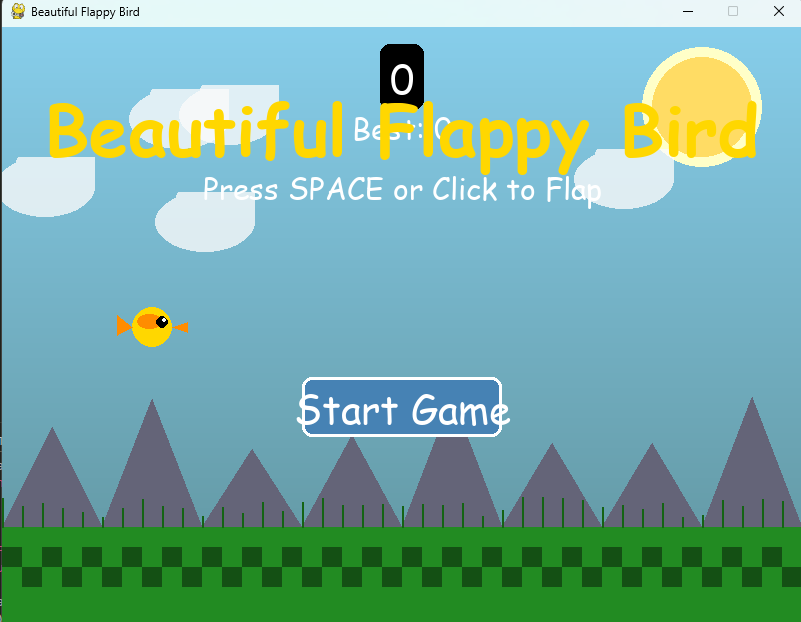

Projects

Flappy Bird (Web + Desktop)
A lightweight remake to bring a smile — built with Go & WebAssembly. Runs in browser and as a native desktop app.
Go
WebAssembly
Fun Project
Play Now →

System Utility – Real-time Monitor
Linux-based desktop application for live monitoring of CPU, memory, Docker containers, and network usage — built in Go for efficiency.
Go
Linux
System Monitoring

CI/CD Pipeline
Automated deployment pipeline using GitHub Actions and Terraform to provision and deploy containerized services on Azure (ACI).
GitHub Actions
Terraform
Docker
Azure